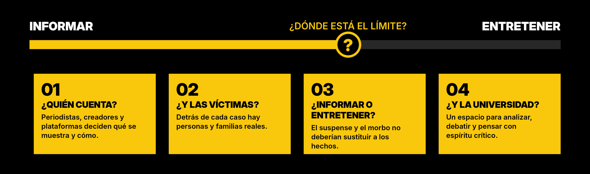

CRITICRIME
¿Dónde está el límite ético del consumo de true crime?Un proyecto universitario para debatirlo.
noviembre 2026
Faltan para la mesa redonda
0días
0horas
0minutos
El debate
- Series, documentales, podcasts y vídeos han convertido los crímenes reales en entretenimiento.
- Pero detrás de cada caso hay víctimas, familias y comunidades reales, y no siempre las tenemos en cuenta cuando consumimos su historia.
- CritiCrime nace para abrir una pregunta: ¿dónde está el límite ético del consumo de true crime? Entre informar y entretener hay una línea cada vez más difusa, y queremos pensarla juntos.

Perspectivas
Invitados a la mesa redonda
Participa
Envíanos tu opinión o una pregunta para la mesa redonda!